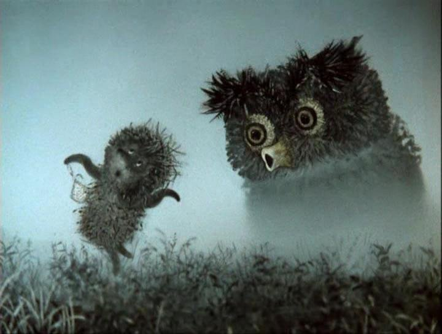
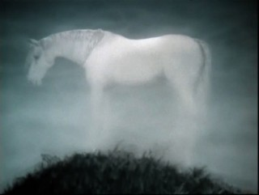
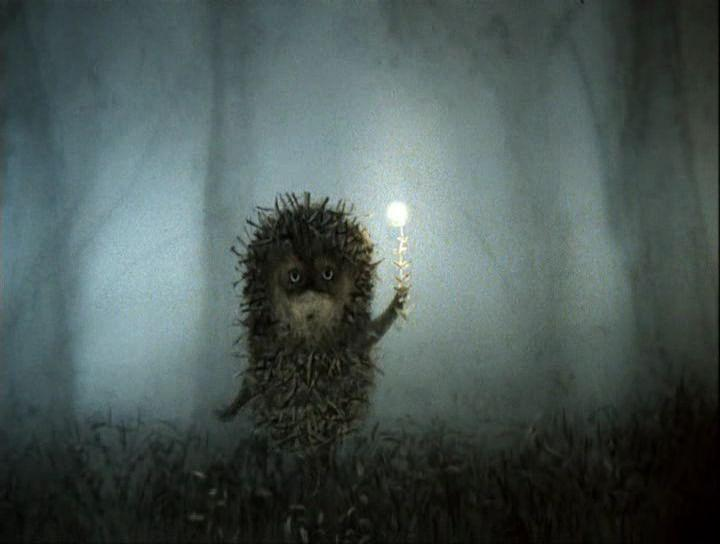
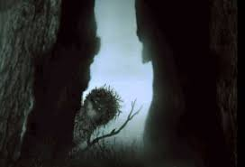
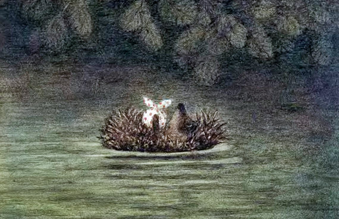
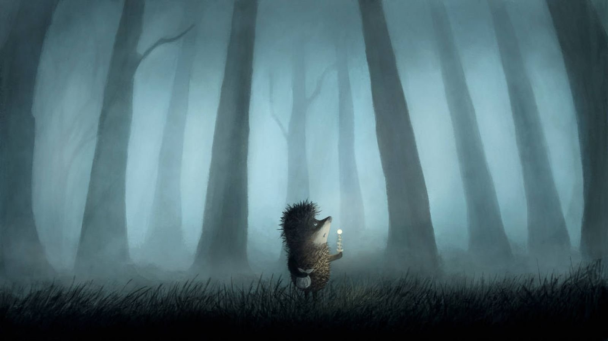

Ёжик — воплощённый Хаос
С первых кадров невозможно не обратить внимание на странный вид главного героя — Ёжика. Он абсолютно не похож на настоящих ежей, у которых иголки растут из туловища.
Нет, этот Ёжик — нагромождение хаотичных линий, будто его форма была вдохновлена абстрактным экспрессионизмом. Для эксперимента заменим Ёжика на фрагмент работы классика этого жанра Джексона Поллока:
Художники этого движения спонтанно выражают внутренний мир, потому что хотят задействовать подсознание. Вот какой смысл несёт такой неожиданный внешний вид персонажа.
Сова из картин Иеронима Босха

Итак, некое порождение подсознания по имени Ёжик бредёт по полю. За ним из-за тёмных силуэтов выступает настоящее чудовище. Сова — это очевидная отсылка к картинам Иеронима Босха, нидерландского классика живописи.
Босх постоянно изображал сову на своих картинах. Искусствоведы считают, что сова у Босха символизирует греховность, глупость и духовную слепоту. Хулиганская сова в следующих сценах буквально издевается над Ёжиком, за что он презрительно называёт её "психом".
Лошадь как символ смерти

Главный герой доходит до опушки и видит в тумане лошадь. Лошадь — это определённый религиозный символ. Во-первых, в западнославянской мифологии белый конь — это дитя Белобога, светлого божества. Во-вторых, лошадь, тем более белую и светящуюся, воспринимали как проводника на тот свет. Хаотичный Ёжик как сумрачное порождение подсознания вытесняется из нашего мира, и на границе бытия его уже встречает лошадь. Он и сам думает о смерти:
"А если лошадь ляжет спать, она захлебнётся в тумане?"
Туман отсылает к шедевру Верещагина

В тумане Ёжик сталкивается с самим мирозданием, выраженным в виде представителей подземного, земного и небесного царств. Из темноты выползает улитка, выходит слон, вылетает сова. Вокруг Ёжика вьются белёсые насекомые, как грифы на знаменитом натюрморте Верещагина "Апофеоз войны":
Древо жизни за границей разума

В конце этого чистилища стоит гигантское дерево. Это настоящее древо жизни, уходящее ветвями за границу разума. В нём соединены все три мира — подземный, земной и небесный. Ёжик явно потрясён деревом-гигантом, в котором воплощено рациональное, эмпирическое и метафизическое познание.
Адская река Стикс

В конце своего метафорического путешествия Ёжик оказывается в реке. Очевидно, что под этим водным потоком подразумевается Стикс, адская река из древнегреческой мифологии, в которой возникли первобытные существа. Одно из таких существ выносит на своей спине Ёжика, полностью смирившегося со своей грядущей кончиной.
Сцена в тёмном лесу как отсылка к хоррору

Сцена в тёмном лесу, который необходимо перейти Ёжику, нарочито сделана в стилистике фильмов ужасов, несмотря на то что мультфильм предназначен для детского просмотра. Всё будто бы снимает прибор ночного видения: нечёткие детали, зеленоватое изображение. Кроме того, камера словно находится в руках несуществующего оператора, который то идёт позади Ёжика, то пятится прямо перед ним. Всё это лишь усиливает ощущение угрозы, до времени невидимой.
Цитата из "Соляриса" Тарковского
Большим источником вдохновения для Юрия Норштейна послужило творчество режиссёра Андрея Тарковского. Мультфильм покадрово повторяет первые несколько минут фильма "Солярис", вышедшего в 1972 году за три года до "Ёжика в тумане". В нём актёр Донатас Банионис, щетинистый, как ёж, точно так же, как герой мультфильма, идёт по туману, видит в нём лошадь, оставляет свою котомку на пне и оказывается в реке.
Психоделия и расширение сознания
Наконец, невозможно упустить из виду уклон произведения в исследование изменённого сознания. Ёжик по сюжету идёт по лесу к своему другу Медвежонку, но по дороге застревает в фантасмагоричном мире, где бродит в полуобморочном состоянии. На это всячески намекают по ходу мультфильма: неоднократно упоминаются некие "можжевеловые веточки", которые сердобольный друг всё подкидывал в костёр. Существует вид можжевельника, при сгорании выделяющий вещество норпсевдоэфедрин, это стимулятор центральной нервной системы. Если предположить, что события развивались в обратном порядке и Ёжик сначала пришёл к Медвежонку, который уже подкинул "веточек", то перед исследователем представляется картина путешествия психонавта в подсознательное.
Сначала у Ёжика активизировалась двигательная активность: он начинает "идти" к Медвежонку, хотя он всё это время сидит рядом.
Потом окружающий Ёжика мир теряет реалистичность. Цвета становятся тусклыми, вокруг неожиданно образуется густой туман. Возникают акустические эффекты: какие-то голоса, эхо. В темноте проявляются пугающие и яркие визуальные галлюцинации: совы, летучие мыши, улитки, слоны. Норштейн даже смелеет и начинает цитировать бывалого психонавта Хантера С. Томпсона (книга "Страх и ненависть в Лас-Вегасе", вышла за четыре года до "Ёжика в тумане"):
"Вдруг раздался страшный рёв вокруг нас, и небо наполнилось чем-то, что напоминало летучих мышей"
Главной в трипе является сцена в реке. Ёжик впадает в гипнотический транс, разговаривает со сверхъестественным трансцендентным существом, которое доставило сознание Ежика обратно к костру.